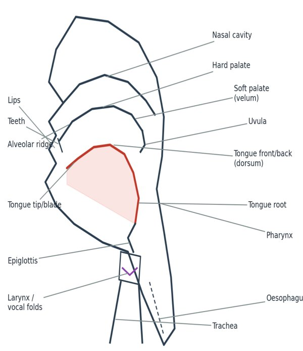

S1 · Medical English · Corrective & Articulatory Phonetics 1 · Summary
Lecture 2 — Organs of speech and articulation
If you remember only this
- 3 subsystems: respiratory (lungs = power source) → phonatory (larynx + vocal folds = voicing) → articulatory (throat, mouth, nose shape the sounds).
- Vocal folds together + vibrating = voiced; apart, not vibrating = voiceless. Separates /p/–/b/, /s/–/z/.
- Passive (fixed): upper lip, upper teeth, alveolar ridge, hard palate, rear wall of the pharynx. Active (move): lower lip, tongue, lower jaw, soft palate.
- Tongue = most flexible articulator, 5 regions: tip, blade, front, back, root.
- Soft palate (velum) = valve: raised → oral sound; lowered → nasal (/m/, /n/, /ŋ/).
1.1 Three subsystems of speech production p. 2
Respiratory — lungs push air out through the trachea (power source)→Phonatory — larynx & vocal folds modulate the airstream, voicing→Articulatory — throat, mouth, nose shape consonants & vowels
1.2 Voicing: the vocal folds p. 2
| Vocal folds (in the larynx) | Result | Examples |
|---|---|---|
| Drawn together, vibrate as air passes | Voiced | /b/, /z/ |
| Remain apart, no vibration | Voiceless | /p/, /s/ |
This single distinction separates many otherwise identical consonant pairs — central to consonant classification (lecture 3).
2. The organs of speech p. 2–4
Organs above the larynx: passive articulators give a relatively fixed surface; active articulators move toward it to form a constriction or closure (Ladefoged & Johnson).
| Category | Articulator | Function |
|---|---|---|
| Passive | Upper lip / upper teeth | Fixed surface for labial and dental contact |
| Passive | Alveolar ridge | Target for tongue-tip closure or narrowing |
| Passive | Hard palate | Surface for tongue-front raising |
| Passive | Rear wall of the pharynx | — |
| Active | Lower lip | Moves toward the teeth or upper lip |
| Active | Tongue (tip, blade, front, back, root) | The most mobile articulator; involved in most English sounds |
| Active | Lower jaw | — |
| Active | Soft palate (velum) | Opens or closes the nasal cavity |
Tongue regions: tip → blade (just behind the tip) → front → back → root. Different sounds = different parts of the tongue raised toward different parts of the roof of the mouth.

2.3 The soft palate: oral vs nasal p. 3
| Velum | Air escapes through | Sound |
|---|---|---|
| Raised — seals off the nasal cavity | Mouth only | Oral |
| Lowered | Nose as well | Nasal: /m/, /n/, /ŋ/ |
Self-check
Name the 3 subsystems and the role of each.
Respiratory (power: lungs push air) · phonatory (larynx, vocal folds: voicing) · articulatory (shapes the sounds).
What happens to the vocal folds in a voiced sound?
They are drawn together and vibrate as air passes.
Active or passive: tongue back, hard palate, lower lip, alveolar ridge, velum?
Active · passive · active · passive · active.
List the 5 regions of the tongue.
Tip, blade, front, back, root.
What position of the velum produces /m/?
Lowered — air passes through the nose (nasal sound).
Which is the most mobile articulator?
The tongue.